철도신호산업기사 (2012-08-26 기출문제)
1과목: 전자공학
1. 차단과 포화영역에서 동작할 때 트랜지스터는 어떤 소자처럼 동작하는가?
- 가변저항
- 증폭기
- 다이오드
- 스위치
(정답률: 72%)

2. 다음 회로의 명칭은?
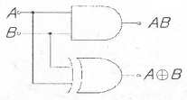
- 전감산기
- 반감산기
- 전가산기
- 반가산기
(정답률: 73%)
3. 주어진 전압 파형을 그대로 유지하면서 기준 레벨에서 위아래로 전압레벨을 올리거나 내려주는 파형 정형회로는?
- 클램퍼(Clamper)회로
- 클리퍼(Clipper)회로
- 리미터(Limitter)회로
- 슬라이서(Slicer)회로
(정답률: 80%)
4. 전압이득이 감소하고 주파수 대역폭이 증가하며 비직선 왜곡이 개선되는 특징이 있는 궤환 증폭회로는?
- 직렬 전압궤환 증폭회로
- 직렬 전류궤환 증폭회로
- 병렬 전압궤환 증폭회로
- 병렬 전류궤환 증폭회로
(정답률: 71%)
5. 다음의 다이오드회로가 정논리일 때 가지는 논리기능은?
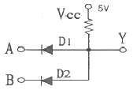
- AND 게이트
- OR 게이트
- NOT 게이트
- NAND 게이트
(정답률: 80%)
6. 다음 중 RLC 직렬공진 회로에서 선택도 Q는? (단, ω0는 공진시 각주파수이다.)
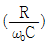
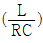
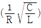
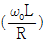
(정답률: 74%)
7. 다음 중 레지스터의 기능은?
- 펄스 발생기이다.
- 카운터의 대용으로 쓰인다.
- 회로를 동기시킨다.
- 데이터를 일시 저장한다.
(정답률: 76%)
8. 시프트 레지스터 출력을 입력에 되먹임 시킴으로써 클럭펄스가 가해지면 같은 2진수가 레지스터 내부에서 순환하도록 만든 계수는?
- 링 계수기
- 2진 리플 계수기
- 동기형 계수기
- 업/다운 계수기
(정답률: 70%)
9. 증폭기의 이득 A=90, 궤환량 β=0.1인 경우 궤환 증폭기의 이득은?
- 10
- 10.1
- 9.9
- 9
(정답률: 67%)
10. 연산증폭기에서 입력전압이 0[V]에서 4[V]로 순간적으로 증가하였을 때 출력전압이 0[V]에서 4[V]로 상승하는데 2[μs]가 소요되었다면 이 증폭기의 슬루율(slew rate)은?
- 1[V/μs]
- 2[V/μs]
- 3[V/μs]
- 4[V/μs]
(정답률: 75%)
11. 베이스접지 방식의 전류증폭율 α와 이미터접지 방식의 전류증폭율 β와의 관계식을 나타내는 식은?
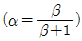
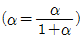
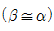
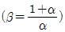
(정답률: 73%)
12. 다음 중 발진회로에서 주파수 변동의 주요 원인에 속하지 않는 것은?
- 부하의 변동
- 주위 온도의 변화
- 전원 전압의 변동
- 완충증폭기의 영향
(정답률: 70%)
13. 다음 중 FET 증폭회로의 응용으로 가장 적합한 것은?
- 신호원 임피던스가 높은 증폭기의 초단
- 주파수 안정도를 높일 필요가 있는 증폭기의 끝단
- 신호원 임피던스가 높은 증폭기의 중간단
- 신호원 임피던스가 높은 증폭기의 끝단
(정답률: 62%)
14. 다음 중 진폭과 위상을 변화시켜 정보를 전달하는 디지털 변조 방식은?
- PSK
- QAM
- ASK
- FSK
(정답률: 71%)
15. 다음과 같은 연산 증폭회로의 역할은
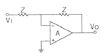
- 감산기
- 부호변환기
- 단위이득 플로어
- 전압 전류 변환기
(정답률: 73%)
16. 그레이(Gray)코드 11010110을 2진수로 나타내면?
- 10011011
- 10010101
- 10110110
- 10101101
(정답률: 72%)
17. 다음 회로의 명칭은?
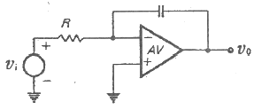
- 미분기
- 적분기
- 분주기
- 가산기
(정답률: 69%)
18. JK 플립플롭에서 입력 J=0, K=1 이고 클록 펄스가 인가되면 Qn+1의 출력상태는?
- 0
- 1
- 반전
- 부정
(정답률: 73%)
19. FET 증폭기의 전압 이득이 증가할 때 대역폭은?
- 영향을 받지 않음
- 증가함
- 감소함
- 일그러지게 됨
(정답률: 60%)
20. 변조도 ma=80%인 AM 피변조파 신호를 제곱 검파 했을 때 왜율은?
- 10%
- 20%
- 30%
- 40%
(정답률: 77%)
2과목: 신호기기
21. 부하의 변화가 있어도 그 단자전압의 변화가 작은 직류 발전기는?
- 직권 발전기
- 가동 복권 발전기
- 분권 발전기
- 차동 복권 발전기
(정답률: 48%)
22. 건널목 전동차단기에 대한 설명으로 잘못된 것은?
- 제어전압은 정격값의 0.9~1.2배로 한다.
- 전동기의 클러치 조정은 차단봉 교체시 시행하여야 한다.
- 장대형전동차단기의 조정범위로 기동전류는 7A이하이다.
- 장대형전동차단기의 조정범위로 정격전압은 DC24V이다.
(정답률: 78%)
23. 직류기의 3요소는?
- 계자, 정류자, 전기자
- 계자, 전기자, 브러시
- 계자, 브러시, 정류자
- 보극, 전지자권선, 정류자
(정답률: 63%)
24. 75kVA, 6000/200V의 단상변압기의 %임피던스 강하가 4%이다. 2차 단락전류는 몇 [A]인가?
- 312.5[A]
- 412.5[A]
- 512.5[A]
- 621.7[A]
(정답률: 60%)
25. 3상 유도전동기의 2차 저항을 2배로 하면 다음 중 2배가 되는 것은?
- 토크
- 전류
- 역률
- 슬립
(정답률: 74%)
26. NS형 전기선로전환기의 동작 시분은?
- 6초 이상
- 6초 이하
- 10초 이상
- 10초 이하
(정답률: 79%)
27. 역방향신호기의 색등에 포함되지 않는 것은?
- 등황색
- 청색
- 적색
- 녹색
(정답률: 63%)
28. 단상 반파 정류회로인 경우 정류 효율은 몇 [%]인가?
- 30.6[%]
- 40.6[%]
- 61.2[%]
- 81.2[%]
(정답률: 32%)
29. 맥동 주파수가 가장 높고 맥동률이 가장 낮은 정류 방식은?
- 3상 전파 정류
- 3상 반파 정류
- 단상 전파 정류
- 단상 반파 정류
(정답률: 74%)
30. 건널목 경보기에서 경보종의 타종수는 기당 매분 얼마인가?
- 10~20회
- 30~50회
- 70~100회
- 120~200회
(정답률: 82%)
31. 일반적으로 3상 변압기의 병렬 운전이 가능하지 않은 것은?
- △-Y 와 Y-△
- △-Y 와 △-Y
- Y-△ 와 Y-△
- △-Y 와 Y-Y
(정답률: 79%)
32. 열차속도 120km/h, 제어거리 1100m일 때 경보시점부터 건널목에 열차도달시간은 약 얼마인가?
- 27초
- 33초
- 38초
- 40초
(정답률: 53%)
33. 건널목제어용 계전기에서 완방회로는 계전기에 콘덴서, 가변저항기, 다이오드를 조합하여 완방시간을 얻도록 하고 있다. 이 중 어떤 것에 의하여 완방시간이 조정되도록 하고 있는가?
- 콘덴서
- 콘덴서 및 다이오드
- 가변저항기
- 다이오드
(정답률: 75%)
34. 종속신호기의 종류에 속하지 않는 것은?
- 출발신호기
- 원방신호기
- 중계신호기
- 입환신호중계기
(정답률: 74%)
35. 전기 선로전환기에서 감속치차 장치에 해당되지 않는 것은?
- 우산형 치차
- 평치차
- 전환치차
- 거리치차
(정답률: 53%)
36. 3상 유도전동기의 원선도를 그리는데 필요하지 않은 시험은?
- 슬립측정
- 구속시험
- 무부하시험
- 저항측정
(정답률: 70%)
37. 신호용 계전기 정격특성에서 코일에 전류를 여자전류 이상으로 하고 접점 구동체가 정상정지 위치까지 이동된 순간의 코일전류를 무엇이라고 하는가?
- 낙하전류
- 여자전류
- 최소 동작전류
- 전환전류
(정답률: 67%)
38. 여자전류기 흐를 때부터 N접점이 닫힐(접촉함) 때까지 다소간 시소(시간)을 갖는 계전기는?
- 완통계전기
- 선조계전기
- 자지유지계전기
- 완방계전기
(정답률: 55%)
39. 동기기에서 여자기에 대한 설명으로 옳은 것은?
- 발전기의 속도를 일정하게 하기 위한 것이다.
- 부하변동을 방지하는 것이다.
- 주파수를 조정하는 것이다.
- 직류 전류를 공급하는 것이다.
(정답률: 76%)
40. 변압기의 결선방법 중 3상 전원을 단상전원으로 변환하기 위하여 사용하는 결선법은?
- Y 결선
- △ 결선
- V 결선
- 스코트 결선
(정답률: 67%)
3과목: 신호공학
41. MJ81형 선로전환기의 기본레일과 텅레일 사이의 밀착 간격은 최초 설치 시 몇 [mm]이하로 하여야 하는가?
- 0.5
- 1.5
- 2.0
- 2.5
(정답률: 87%)
42. 신호기의 위치와 열차정지표시의 위치가 상이할 경우 열차에 의하여 궤도회로 점유에 따른 신호기 현시상태를 유지하기 위한 쇄정은?
- 보류쇄정
- 진로쇄정
- 정위쇄정
- 폐로쇄정
(정답률: 82%)
43. 경부고속철도의 지장물검지장치 설치위치로 거리가 가장 먼 것은?
- 고속철도를 횡단하는 고가도로
- 장대터널 입구
- 낙석 또는 토사붕괴가 우려되는 개소
- 도로가 인접하여 자동차 침입이 우려되는 개소
(정답률: 82%)
44. 다음 중 열차종합제어장치(TTC)의 기능이 아닌 것은?
- 열차의 진로를 제어한다.
- 열차의 diagram을 변경한다.
- 입환스케줄을 자동으로 입력한다.
- 운행 열차를 추적하여 표시 및 모니터한다.
(정답률: 92%)
45. 무정전전원장치(UPS)의 주요 구성기기가 아닌 것은?
- 축전지
- 정류기
- 변류기
- 인버터
(정답률: 82%)
46. 시소계전기의 시소 허용한도는 별도로 정해진 것을 제외하고는 몇 [%] 이내로 하는가?
- ±10
- ±20
- ±30
- ±40
(정답률: 91%)
47. 궤도회로 내의 임의의 점 X에 있어 단락감도(Rm)를 나타내는 식으로 맞는 것은? (F : 동작전압/낙하전압[V], G : X점에서 본 회로 전체의 임피던스)
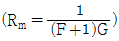
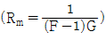
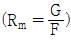
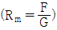
(정답률: 92%)
48. 경부고속철도에서 열차의 운행방향에 의하여 궤도회로의 송수신 위치를 결정하여 주는 장치는?
- 거리조정기
- 방향계전기
- 송수신기
- 정합변성기
(정답률: 81%)
49. 경부고속철도에서 사용하는 현장제어모듈 중 선로전환기 모듈(PM)에 대한 설명으로 거리가 먼 것은?
- 3상의 전기선로전환기를 최대 4대까지 제어가 가능하다.
- 선로전환기의 위치 및 장애상태를 검지한다.
- CAMS(컴퓨터 유지보수), LCP(현장제어판넬)에 장애를 보고한다.
- 자동 열차번호 부여를 위한 정보를 제공한다.
(정답률: 91%)
50. 신호기를 현시별로 분류할 때 신호기의 현시를 정지, 진행 또는 주의, 진행으로 점등하여 주는 것은?
- 1위식 신호기
- 2위식 신호기
- 3위식 신호기
- 4위식 신호기
(정답률: 96%)
51. 역과 역 사이에 있어서 ATC신호의 운행관리 지시에 따라 지정된 속도로 열차가 주행하는 제어는?
- 감속제어
- 정속도 운행제어
- 정위치 정지제어
- 출입문 개폐제어
(정답률: 95%)
52. 고전압 임펄스 궤도회로의 주요 구성이 아닌 것은?
- 임피던스본드
- 전압안정기
- 한류리액터
- 송·수신기
(정답률: 87%)
53. 전기연동장치의 진로제어방식 중 진로선별회로에 대한 설명으로 가장 거리가 먼 것은?
- 접점의 절약을 도모할 수 있다.
- 선로전환기 제어회로를 간소화시킬 수 있다.
- 진로정자식 및 단독정자식에 비해 안전도가 높다.
- 동일진로의 신호기만 상호쇄정하므로 관계진로의 기타 신호기는 쇄정이 안된다.
(정답률: 85%)
54. 신호용 전원설비의 무부하일 때 직류출력 전압이 1⑤[V]이고, 정격 부하를 연결 했을 때의 전압이 100[V]였다면 전압 변동률은?
- 2.5%
- 5%
- 10%
- 20%
(정답률: 96%)
55. 다음 중 경부고속철도 ATC 지상설비에서 궤도회로에 의한 연속정보 전송내용이 아닌 것은?
- 실행속도
- 예고속도
- 폐색구간 길이
- 폐색구간내 전차선 절연구간 위치
(정답률: 74%)
56. 현재 점유하고 있는 궤도회로로부터 속도정보를 수신받아 열차를 안전하게 운행할 수 있도록 한 신호방식은?
- ABS
- ATS
- ATC
- CBTC
(정답률: 96%)
57. 복선구간에서만 채용되는 폐색방식은?
- 통표 폐색식
- 차내 신호 폐색식
- 자동 폐색식
- 연동 폐색식
(정답률: 85%)
58. 궤도회로 시구간이 발생하는 개소로 거리가 먼 것은?
- 선로의 분기기 교차점
- 텅레일
- 교량
- 크로싱
(정답률: 91%)
59. 경부고속철도 궤도회로 현장설비 중 동조회로의 특성계수를 개선하고 전차선 전류를 제한시켜 평형을 유지시키는 설비는?
- 동조유니트
- 공심유도자
- 메칭
- 보상용 콘덴서
(정답률: 81%)
60. 다음 중 등열식 신호기는?
- 엄호신호기
- 유도신호기
- 폐색신호기
- 원방신호기
(정답률: 67%)
4과목: 회로이론
61. R-L직렬회로에 i=I1sinωt+I3sin3ωt[A]인 전류를 흘리는데 필요한 단자 전압 e[V]는?
- (Rsinωt+ωLcosωt)I1+(Rsin3ωt+3ωLos3ωt)I3
- (Rsinωt+ωLcos3ωt)I1+(Rsin3ωt+3ωLosωt)I3
- (Rsin3ωt+ωLcosωt)I1+(Rsinωt+3ωLos3ωt)I3
- (Rsin3ωt+ωLcos3ωt)I1+(Rsinωt+3ωLosωt)I3
(정답률: 70%)
62. 3상 유도전동기의 출력이 3.5[kW], 선간전압이 220[V], 효율 80%, 역률 85%일 때 전동기의 선전류는?
- 약 9.2[A]
- 약 10.3[A]
- 약 11.4[A]
- 약 13.5[A]
(정답률: 70%)
63. 그림의 회로에서 단자 a-b에 나타나는 전압은 몇 [V]인가?
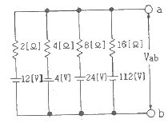
- 10[V]
- 12[V]
- 14[V]
- 16[V]
(정답률: 69%)
64. 전압 v=20sin20t+30sin30t[V]이고, 전류가 i=30sin20t+20sin30t[A]이면 소비전력[W]은?
- 1200[W]
- 600[W]
- 400[W]
- 300[W]
(정답률: 72%)
65. 그림의 회로에서 스위치 S를 갑자기 닫은 후 회로에 흐르는 전류 i(t)의 시정수는? (단, C에 초기 전하는 없었다.)
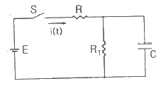
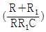
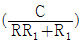
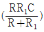
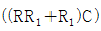
(정답률: 60%)
66. 출력이
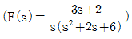
로 표시되는 제어계가 있다. 이 계의 시감함수 f(t)의 정상값은?- 3
- 2
- 1/3
- 1/6
(정답률: 74%)
67. 대칭 6상 전원이 있다. 환상결선으로 권선에 120[A]의 전류를 흘린다고 하면 선전류는?
- 60[A]
- 90[A]
- 120[A]
- 150[A]
(정답률: 74%)
68. 2단자 임피던스함수가
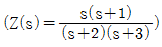
일 때 회로의 단락 상태를 나타내는 점은?- -1, 0
- 0, 1
- -2, -3
- 2, 3
(정답률: 58%)
69.
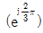
와 같은 것은?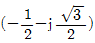
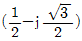
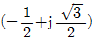
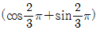
(정답률: 67%)
70. 다음은 과도현상에 관한 내용이다. 틀린 것은?
- RL 직렬회로의 시정수는 L/S [s] 이다.
- RC 직렬회로에서 Vo로 충전된 콘덴서를 방전시킬 경우 t=RC에서의 콘덴서 단자전압은 0.632Vo이다.
- 정현파 교류회로에서는 전원을 넣을 때의 위장을 조절함으로써 과도현상의 영향을 제거할 수 있다.
- 전원이 직류 기전력인 때에도 회로의 전류가 정현파로 되는 경우가 있다.
(정답률: 62%)
71. 그림과 같은 회로의 a-b간에 20[V]의 전압을 가할 때 5[A]의 전류가 흐른다. r1과 r2에 흐르는 전류의 비를 1:2로 하려면 r1 및 r2는 각각 몇 [Ω]인가?
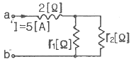
- r1=1, r2=4
- r1=4, r2=2
- r1=3, r2=6
- r1=6, r2=3
(정답률: 67%)
72. 대칭 3상 Y결선 부하에서 각상의 임피던스가 Z=16+j12[Ω]이고 부하 전류가 5[A]일 때 이 부하의 선간전압[V]은?
- 100√3
- 100√2
- 200√3
- 200√2
(정답률: 64%)
73. 어느 회로에 전압 V=6cos(4t+30°)[V]를 가했다. 이 전원의 주파수[Hz]는?
- 2
- 4
- 2π
- 2/π
(정답률: 70%)
74. 그림의 회로가 주파수에 관계없이 일정한 임피던스를 갖도록 C[㎌]의 값을 구하면?
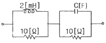
- 20
- 10
- 2.45
- 0.24
(정답률: 62%)
75. 기본파의 30[%]인 제3고조파와 기본파의 20[%]인 제5고조파를 포함하는 전압파의 왜형률은 약 얼마인가?
- 0.21
- 0.33
- 0.36
- 0.42
(정답률: 69%)
76. i=15sin(ωt-π/6)[A]로 표시되는 전류보다 위상이 60° 지연되고, 최대치가 200[V]인 전압 v를 식으로 나타낸 것은?
- v=200sin(ωt-π/2)
- v=200sin(ωt+π/2)
- v=200sin(ωt-π/6)
- v=200sin(ωt+π/6)
(정답률: 41%)
77. 다음 회로해석의 설명 중에서 옳지 않은 것은?
- 전기회로는 특정 목저글 달성하기 위하여 상호 연결된 회로소자들의 집합이다.
- 옴의 법칙과 같은 소자법칙은 회로가 어떻게 구성되는지에 따라 각 개별 소자에서 단자 전압과 전율 관계지어준다.
- 키르히호프의 법칙은 회로의 연결 법칙으로서 전하 불변 및 에너지 불변으로부터 유래되었다.
- 일반적으로 전압-전류특성에 의하여 회로의 형태를 알 수 있는 것이며, 특히 다이오드와 트랜지스터는 선형적으로 해석할 수 있다.
(정답률: 50%)
78. f(t)=sintcost를 라플라스 변환하면?
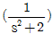
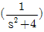
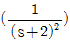
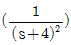
(정답률: 53%)
79. 4단자 정수를 구하는 식으로 틀린 것은?
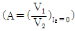
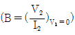
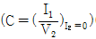
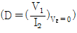
(정답률: 50%)
80. 임피던스가
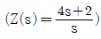
로 표시되는 2단자 회로는? (단, s=jw이다.)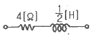
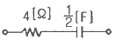
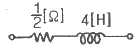
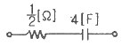
(정답률: 64%)